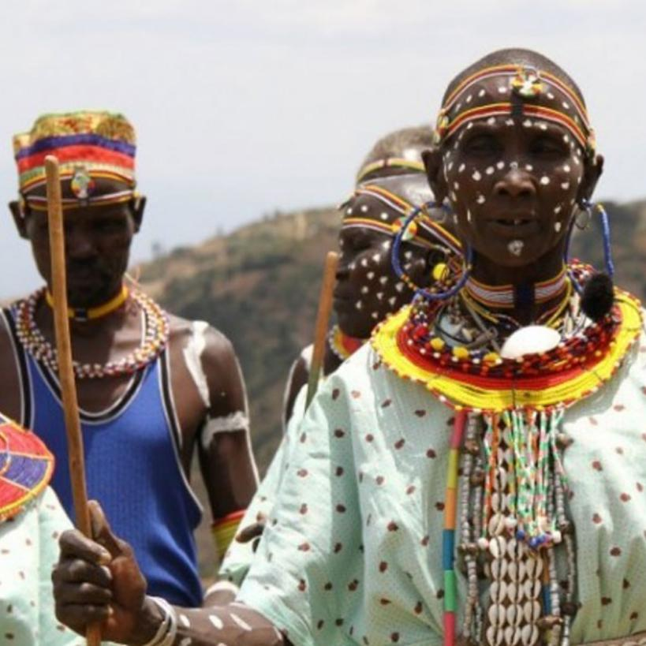

The Kalenjin are a group of Southern Nilotic peoples
indigenous to East Africa, residing mainly in what
was formerly the Rift Valley Province in Kenya. They
number 6,358,113 individuals as per the Kenyan 2019 census.
They are divided into nine culturally and linguistically
related clans: Kipsigis, Nandi, Keiyo, Marakwet, Sabaot,
Pokots, Tugen, Terik and Ogiek.[2] They speak Kalenjin
languages, which belong to the Nilotic language family

The Kalenjin live primarily in Kenya. They are an ethnic
grouping of eight culturally and linguistically related
groups or "tribes": the Kipsigis, Nandi, Tugen, Keiyo,
Marakwet, Pokot (sometimes called the Suk), Sabaot
(who live in the Mount Elgon region, overlapping the
Kenya/Uganda border), and the Terik. Their present-day
homeland is Kenya's western highlands and the Rift Valley.